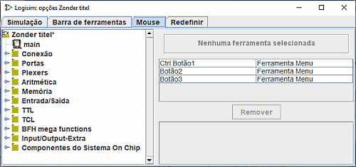
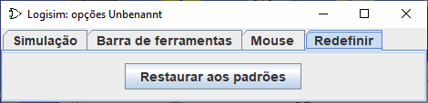

A guia Mouse
Por padrão, quando você clicar com o mouse na área de desenho do Logisim, a ferramenta selecionada no momento será utilizada. Se você clicar com o botão direito ou right-click ou control-click, ele irá exibir um menu pop-up para o componente sob o mouse.
O Logisim lhe permite modificar esse comportamento, aliviando-lhe a necessidade de ir à barra de ferramentas e/ou ao explorador o tempo todo. (Isto também poderá ser útil se você for canhoto). Cada combinação de um botão do mouse e uma tecla modificadora (qualquer subconjunto de setas para deslocamento, shift, control e alt) poderá ser mapeado para uma ferramenta diferente. A guia do mouse lhe permitirá configurar esses mapeamentos.

-
No lado esquerdo está um explorador, onde você poderá escolher a ferramenta que desejar mapear.
-
No lado superior direito está um retângulo no qual você pode clicar usando a combinação do mouse. Por exemplo, se você pretende criar novas conexões, arrastando-as, em seguida, você deverá primeiro selecionar a ferramenta Conexões (Wiring) no explorador (na biblioteca Base) e então fazer shift-click onde estiver "Clicar usando uma combinação para mapear a ferramenta para conexão". Se essa combinação já estiver sendo usada, o mapeamento logo em seguida será substituído pela nova ferramenta.
-
Abaixo desta área está uma lista dos mapeamentos correntes. Note-se que todas as combinações que não estiverem listadas simplesmente usarão a ferramenta selecionada.
-
Mais abaixo está o botão Remover, por meio do qual você poderá excluir o mapeamento que estiver atualmente selecionado na tabela acima dele. No futuro, então, que essa combinação de mouse seria mapeada para qualquer ferramenta que estiver selecionada na barra de ferramentas ou no painel de explorador.
-
Por último está uma lista de atributos para a ferramenta selecionada no momento na lista de mapeamentos. Cada ferramenta de mapeamento de mouse tem seu próprio conjunto de atributos, diferentes daqueles utilizados no painel do explorador e na barra de ferramentas. Você poderá editar os valores de atributo ali.
A guia Redefinir

Esta aba é muito simples. Usando apenas o botão Restaurar aos padröes todos os parâmetros serão repostos para a configuração do modelo definida no A guia Gabarito .
Próximo: Guia do usuário